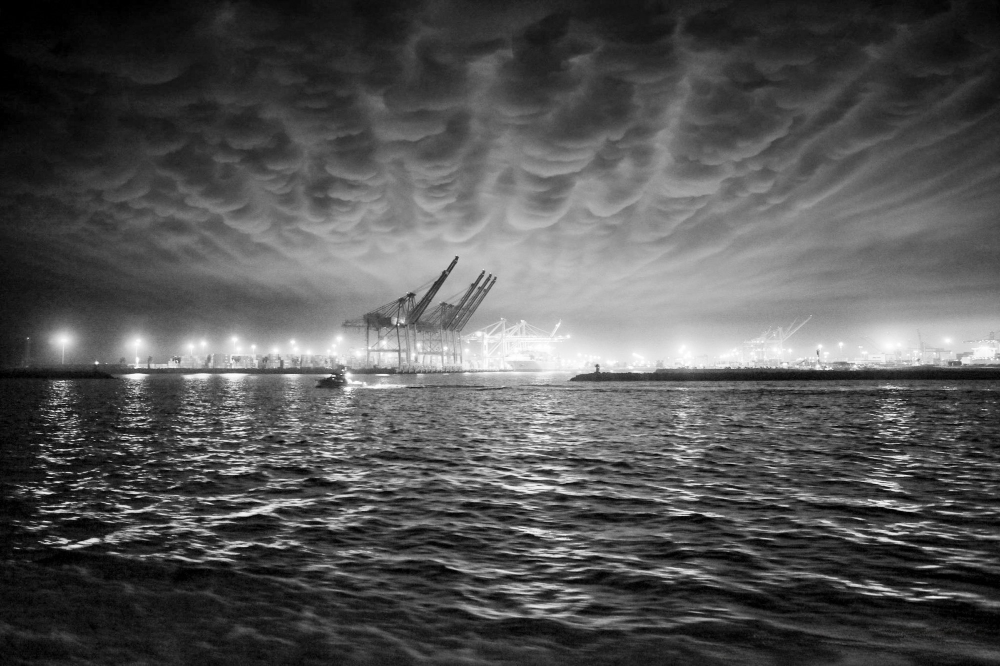
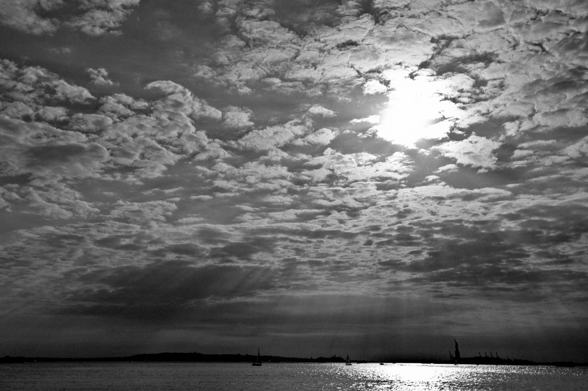
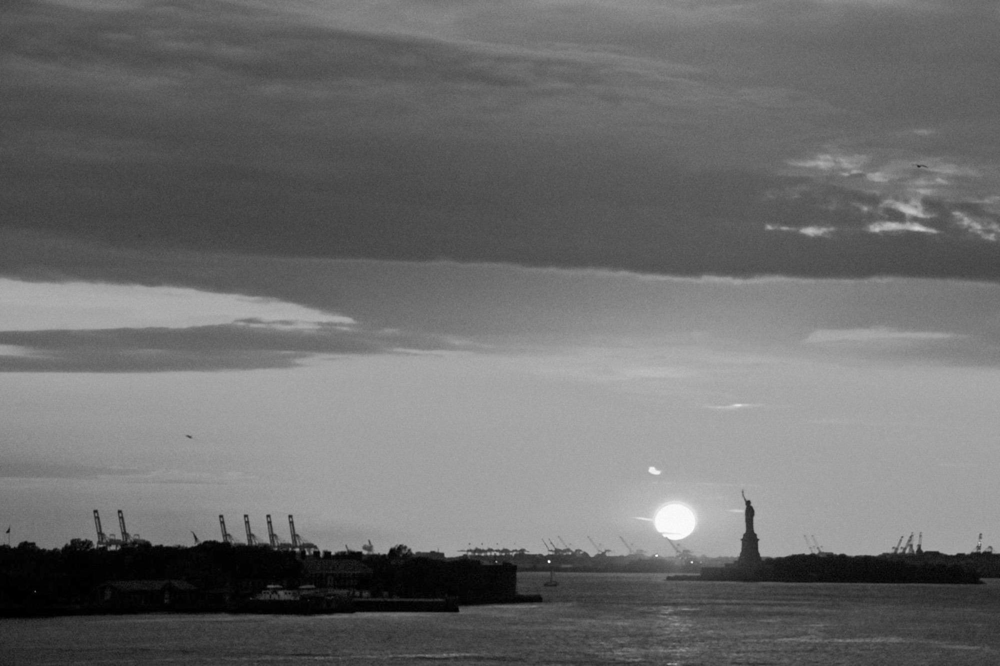
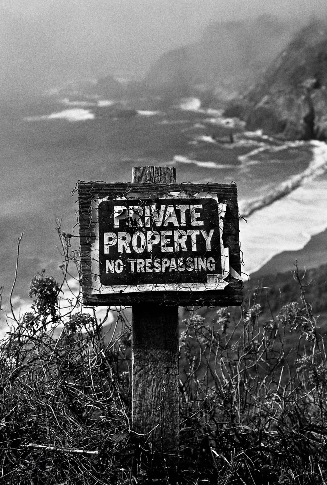
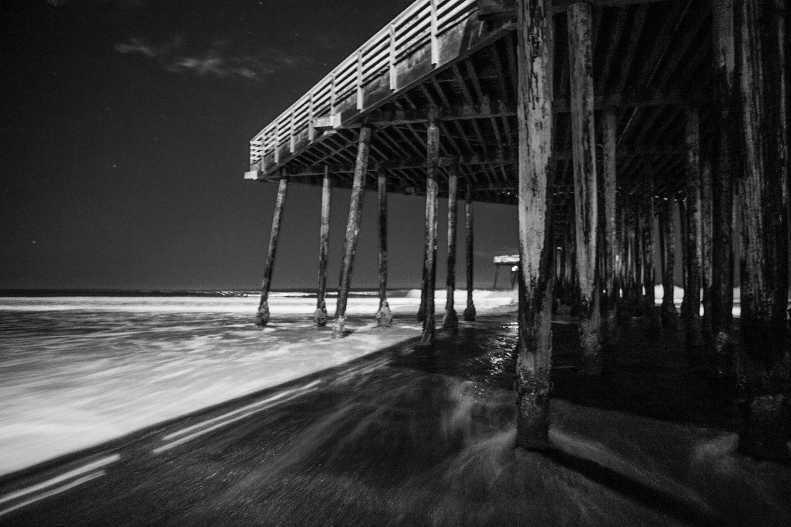
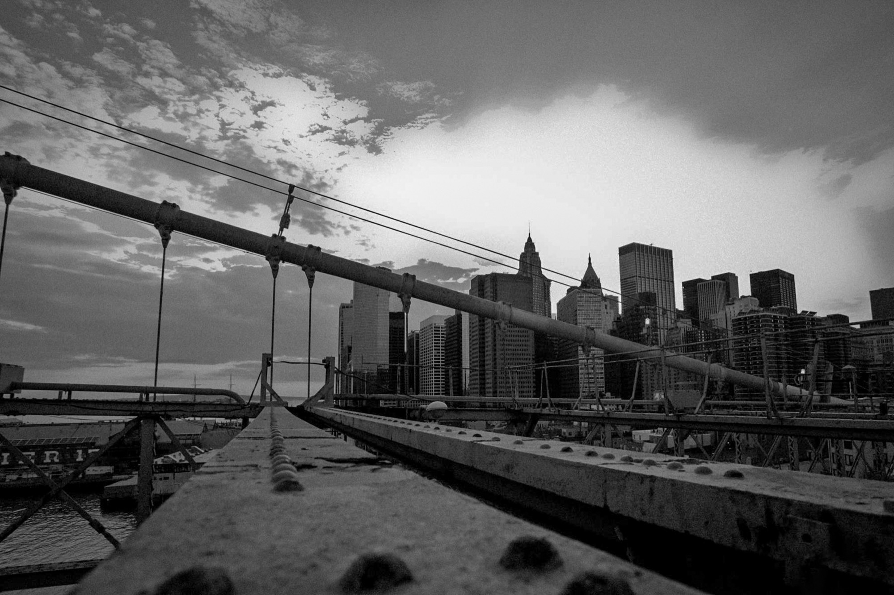
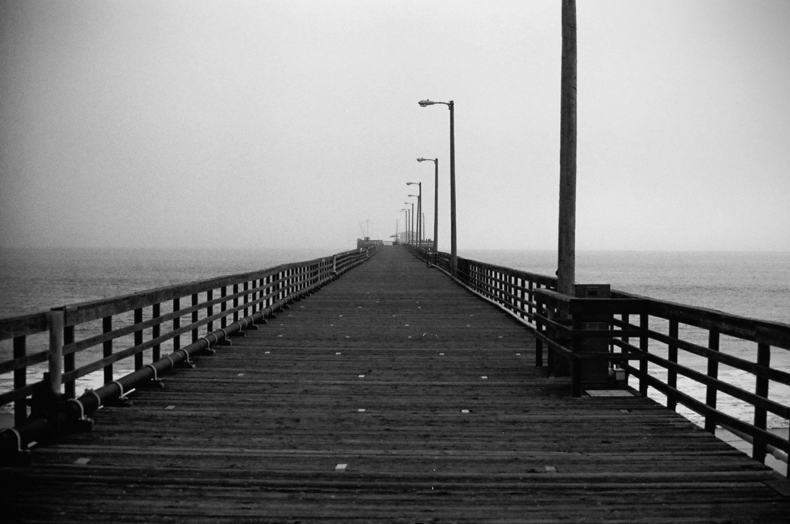
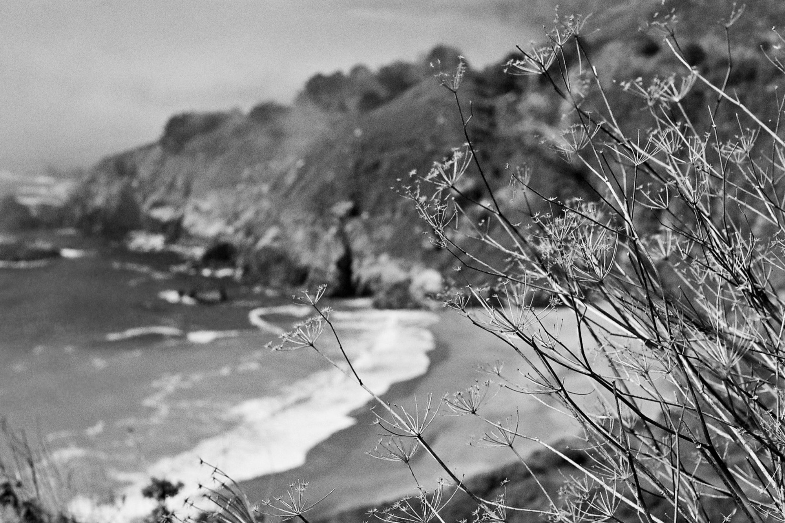
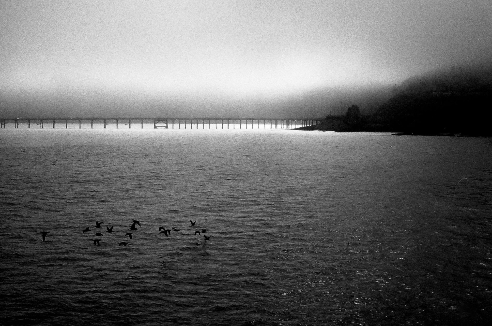

Selected Work · Collection
Cityscapes
Cityscapes
A city seen whole is its own kind of portrait. Skylines rise and dissolve into weather, harbors carry the weight of industry, and the horizon gives nothing away. These frames hold the scale of it, where steel meets water and light, and the gray keeps what the city will not say.









